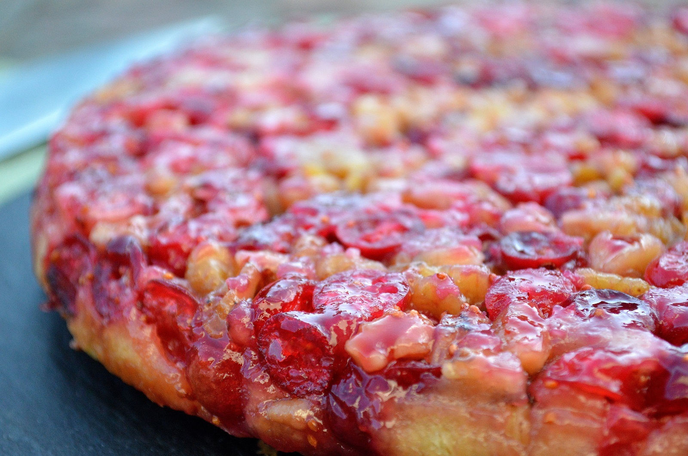

Pie

Nantucket Cranberry Pie Recipe
Ingredients
- 2 cups cranberries
- 3/4 cups sugar
- 1 cup pecans or walnuts
- Flour
- 2 eggs
- More sugar
- Butter
Steps
- coat pie pan with butter
- Coarsely chop cranberries and cover the bottom of the pie pan with them
- Cover the cranberries with sugar
- Chop the nuts and cover te cranberries
- Make the cake dough
- Pour the dough into the pie pan
- Bake at 350 degrees for about 45 minutes